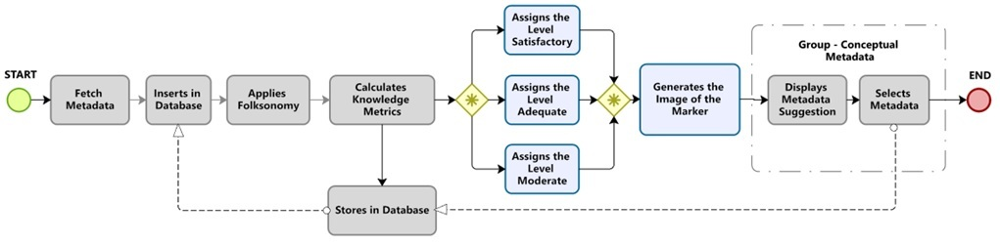

Main author: Bruno Zolotareff dos Santos - Polytechnic of the University of São Paulo
account_boxCurriculum Lattes
 ORCID ID: 0000-0001-9233-4312
ORCID ID: 0000-0001-9233-4312
Second author: Sandra dos Santos Vales - University of São Paulo
account_boxCurriculum Lattes
 ORCID ID: 0000-0001-5644-8363
ORCID ID: 0000-0001-5644-8363
Advisor: Jorge Rady Almeida Junior - Polytechnic of the University of São Paulo
account_boxCurriculum Lattes
ORCID ID: 0000-0003-3839-4570
Abstract
In this article we have presented a classification model for metadata extracted from tweets using collaborative filters, proposing a metadata recommendation system at the knowledge level. Due to the limited resources available for tagging in social media, the quality of metadata used for this practice often poses interpretation issues when selecting, resulting in a loss of engagement due to flaws in term formation or a lack of understanding of the shared metadata within the social network. In this study, we proposed a selection algorithm that filters and classifies metadata based on metrics that measure the collective intelligence aggregated in the metadata. We then index knowledge indexes that are readily identifiable visually. The proposed model involves two main steps for classifying and recommending metadata.
Keywords: Metadata, classification, metrics, tagging, social network.
Sorting Algorithm

Adaptation of Pearson's correlation and Cohen's classification
You can see Appendix I which explains how the Pearson Correlation applied to the proposed system works. Click the link below to open the pdf.
Recommendation system - using metadata in the tagging system
Here you can check a post with knowledge level tags, to better understand read part of the study available at the link below, however, it is advisable to watch the cognomy prototype video to see the metadata recommendation process.

Cognomy System - a collaborative software prototype for model application
An explanation of how the prototype developed to test the proposed metadata classification model at the knowledge level works. There is a video with this explanation at the link below.
Repositories and links with material - Appendices
There are currently two active repositories, the main one with the step-by-step description is on github, it can be found in the REDME. The second repository is found in Google Drive, where I make available the software used in the experiment with the correct versions.
J_Rox Multi-Agent JavaScript Framework Project
This is a project at the beginning that will be in the github repository, there is little code yet, but the initial objective is to simulate interaction with agents in the proposed recommendation system using the Cognomy prototype.